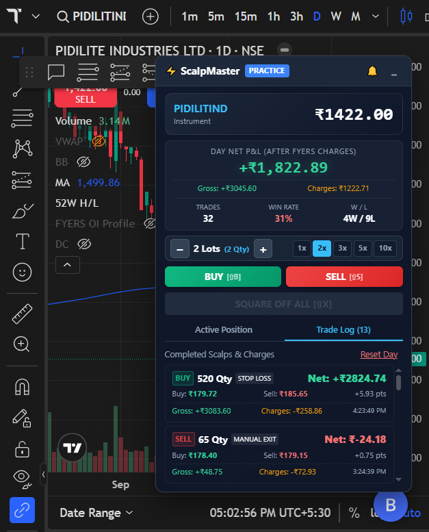
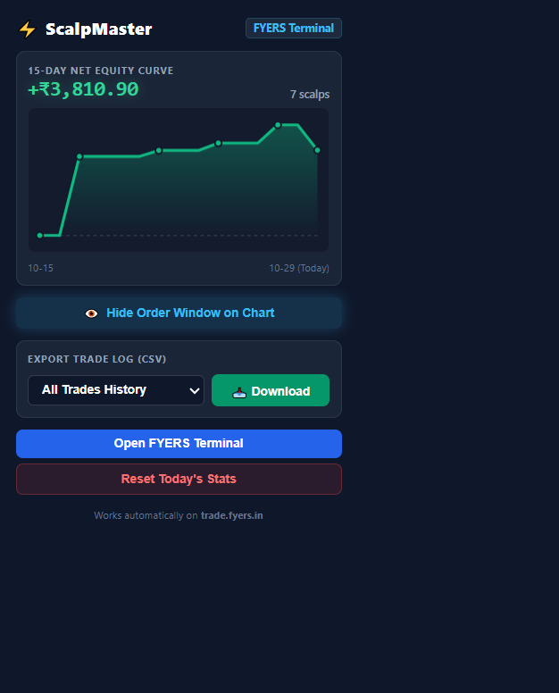

ScalpMaster overlays a professional high-speed HUD directly onto your web trading terminal (FYERS / TradingView). Practice order entries, drag stop-losses on the chart canvas, and view true post-tax PnL without risking real capital.
Screenshots During Development
See how ScalpMaster seamlessly embeds onto the TradingView chart terminal.


Track your day-by-day profitability curve rendered in clean HTML canvas. Know whether your scalping strategy actually produces green days after Indian exchange statutory charges.
Download your full trade journal with a single click. Filter by Last 30 Days, 120 Days, or All Time for deep post-session strategy analysis in Excel or Python.
Need clean chart view? Toggle the order window on and off instantly without losing your active paper trade or stop-loss markers.
Why ScalpMaster Outperforms Generic Paper Trading
Zero configuration required. Detects Nifty, BankNifty, FinNifty, Options, and Equities directly from the active chart and sets the proper exchange lot sizes automatically.
Draws a full-width dashed red SL line directly on the TradingView canvas via native Chart Order APIs. Drag it with your mouse to adjust your stop loss on the fly.
Calculates exact exchange turnover charges, ₹20/order flat brokerage, STT/CTT (0.1%), GST (18%), and state stamp duty so your paper results mirror real-world trading accounts.
Holding 3 lots? Clicking the opposite direction smoothly scales out by your chosen lot size rather than flipping your entire position.
Runs 100% locally in your browser storage (`chrome.storage.local`). No account creation, no cloud tracking, and zero access to your real trading capital.
Built using modern Chrome Extension standards (MV3). Ultra-lightweight with zero lag on TradingView chart rendering or order book feeds.
How to Install in 60 Seconds
Download the source code as a ZIP from GitHub or run:
git clone https://github.com/raviudal/fyers-scalpmaster.git
Navigate to chrome://extensions in your Chromium browser and enable Developer mode (toggle top right).
Click "Load unpacked" and select the downloaded fyers-scalpmaster folder.
Open trade.fyers.in. The ScalpMaster HUD will automatically appear directly on your chart canvas.
Frequently Asked Questions
No. ScalpMaster is strictly a paper-trading practice HUD. It does not access your real trading funds, place live exchange orders, or require broker API tokens.
The fee calculator incorporates the exact Indian regulatory schedule: ₹20/order brokerage, 0.1% STT/CTT on sell, NSE/BSE turnover fees, GST (18%), and stamp duty, giving you realistic post-tax net P&L.
Yes! I build custom trading software, broker API bridges, and execution engines for traders and desks. You can request custom extensions on my developer portfolio.